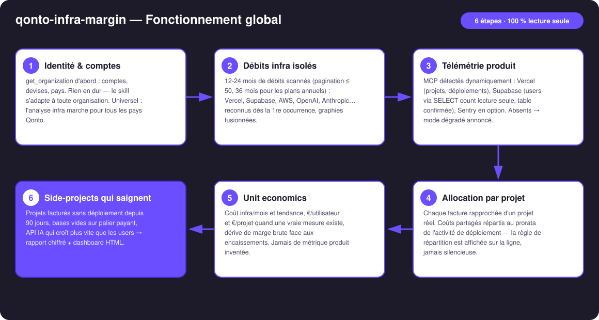
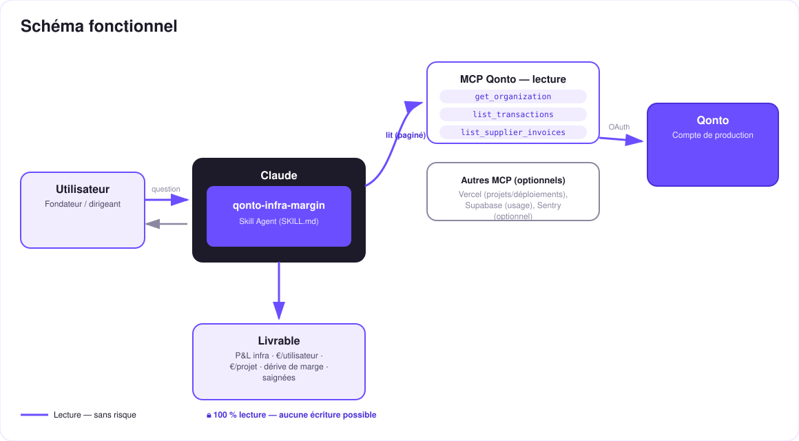

Ton infra te coûte combien, par utilisateur ? — le MRR, tout le monde le connaît ; l'unit economics de l'infra, personne.
Un founder SaaS récite son MRR par cœur. Son coût d'infra par utilisateur ? Silence. Les factures Vercel, Supabase, OpenAI, AWS se noient dans les débits carte, et la marge brute dérive sans que personne ne regarde. Le skill répond avec ce qui est réellement sorti du compte :
Vercel, Supabase, OpenAI, AWS, Scaleway, OVH… reconnus dès la 1re occurrence, graphies normalisées, classés par famille : cloud, data, IA, observabilité, tooling.
Via les MCP connectés : Vercel (projets, déploiements), Supabase (projets, users via SELECT count lecture seule), Sentry en option.
€/utilisateur, €/projet (prorata annoncé), dérive de marge brute mois par mois face aux encaissements.
Side-projects facturés sans déploiement depuis 90 j, bases vides sur palier payant, API IA qui croît plus vite que les users.
| Prérequis | Détail | Obligatoire |
|---|---|---|
| Compte Qonto production | Le skill s'adapte à toute organisation — get_organization d'abord, zéro donnée en dur | ✅ |
| Pays | Universel — analyse identique pour tous les pays Qonto (FR, DE, ES, IT, AT, NL, BE, PT). La vérité = le débit du compte (côté EUR des factures USD, change inclus) | ℹ️ détecté |
| MCP Qonto connecté | Connecteur officiel (claude.ai / Claude Desktop), login OAuth | ✅ |
| MCP Vercel | list_projects + list_deployments → allocation par projet, projets morts détectés | ⭕ recommandé — sinon mode dégradé annoncé |
| MCP Supabase | list_projects + execute_sql (SELECT count lecture seule, table confirmée) → €/utilisateur mesuré | ⭕ recommandé — sinon mode dégradé annoncé |
| Historique ≥ 12 mois | Tendances et plans annuels ne se voient que sur 12-36 mois ; en dessous, dégradation honnête | ⭕ |

AWS EMEA SARL = AMZN WEB SERVICES = AWS ; OPENAI *CHATGPT = OpenAI)emitted_at, pas settled_at (1-2 j d'écart)
100 % lecture, des deux côtés. Côté Qonto : aucun outil d'écriture appelé, jamais — rien à approuver, rien d'exécuté. Côté produit : execute_sql est bridé à des SELECT count unitaires en lecture seule, sur une table que l'utilisateur confirme avant exécution — jamais de DDL/DML, jamais de table devinée.
| Famille | Fournisseurs typiques (exemples, jamais exhaustif) |
|---|---|
| Cloud & hosting | AWS, Google Cloud, Azure, Scaleway, OVHcloud, Hetzner, DigitalOcean, Fly.io, Railway, Render, Heroku |
| Frontend & edge | Vercel, Netlify, Cloudflare |
| Data & backend | Supabase, MongoDB Atlas, Neon, PlanetScale, Firebase, Upstash |
| API IA | OpenAI, Anthropic, Mistral, Replicate, ElevenLabs, fal.ai, Hugging Face |
| Observabilité | Sentry, Datadog, Better Stack, Grafana Cloud |
| Dev tooling | GitHub, GitLab, Docker, npm, JetBrains |
| Métrique | Exemple (fictif) | Condition |
|---|---|---|
| Coût infra / mois + tendance | 412 €/mois, +18 % sur 12 mois | Toujours (Qonto seul suffit) |
| €/utilisateur | Supabase 180 €/mois ÷ 1 240 users = 0,15 €/user | Seulement si un vrai comptage a été mesuré |
| €/projet | Facture Vercel répartie au prorata des déploiements — règle affichée | MCP Vercel présent |
| Dérive de marge | Infra : 3,1 % → 4,8 % des encaissements en 6 mois | MRR déclaré, ou encaissements en proxy annoncé |
| Saignées | 1 side-project = 80 % de la facture Vercel, 0 déploiement depuis 3 mois | MCP produit présent |
| Sortie | Format | Quand |
|---|---|---|
| Réponse dans la conversation | Tableaux markdown : P&L infra (fournisseur × mois), unit economics, saignées | Toujours — c'est la base |
| Dashboard interactif | Fichier/artifact HTML : barres empilées par famille, jauge €/user, courbe de dérive, spotlight saignées | Si l'hôte affiche les fichiers (artifacts claude.ai, Claude Desktop, Claude Code) ; repli automatique sinon |
| Mode dégradé | Mêmes tableaux sans €/user ni allocation par projet — annoncé | Sans MCP Vercel/Supabase |
La démo ≤ 3 min jointe à la PR suit le storyboard : le MRR que tout le monde connaît → les débits infra isolés → la télémétrie produit branchée → la révélation (le vrai €/utilisateur, et le side-project qui saignait depuis des mois) → le dashboard final. Le script détaillé de tournage est conservé en interne (hors dépôt).
| Idée | Effort | Note |
|---|---|---|
| MCP Stripe/paiements pour un MRR mesuré (plus de proxy) | Faible | Détection dynamique, même logique que Vercel/Supabase |
| Alerte mensuelle « ta marge brute a dérivé de +N points » | Moyen | Rituel du 1er du mois, comme qonto-tax-pilot |
| Benchmark interne : €/user vs il y a 12 mois | Faible | Réutilise l'historique déjà scanné |
| Rightsizing par fournisseur (pricing vérifié en ligne au moment T) | Moyen | Jamais depuis la mémoire du modèle |
| Croisement avec qonto-subscription-audit | Faible | Les deux skills partagent la détection de récurrences |
execute_sql limité à des SELECT count unitaires, sur une table confirmée par l'utilisateur